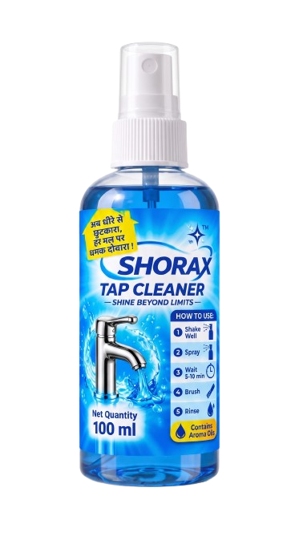

Say Goodbye to Stubborn Shora Stains. Bring Back the Shine!
Fed up with stubborn white water stains and hard-water deposits on your bathroom and kitchen taps? ShoraX Tap Cleaner is specially formulated to tackle them and help restore the shine.
Those unwanted white marks can make even a beautiful bathroom or kitchen look dull and unclean. ShoraX helps you get rid of them, with a simple routine you can finish in minutes.

One tap cleaner, built for Shora stains.
ShoraX Tap Cleaner is a specially formulated spray for the stubborn white hard-water deposits on bathroom and kitchen taps. It does one job, and it is designed to do it well.
- Targets stubborn Shora and hard-water deposits
- Tested on high-TDS water
- Natural oil-based fragrance that leaves a pleasant scent
- Convenient 100 ml spray bottle
A Smarter Way to Clean Your Taps
ShoraX is a specially formulated tap-cleaning solution designed to tackle stubborn white Shora deposits caused by hard water. It combines a purpose-designed cleaning formula with a pleasant natural oil-based fragrance.
Tap Cleaner for Hard-Water Stains on Bathroom and Kitchen Taps
White marks around taps and faucets can develop when hard water dries and leaves behind mineral deposits. These stubborn deposits can make chrome-finished bathroom and kitchen fittings look dull. ShoraX Tap Cleaner is a specialised cleaning spray designed to tackle white Shora deposits and hard-water marks on taps.
For a simple cleaning routine, shake the 100 ml spray bottle, apply ShoraX directly to the deposits, allow 5–10 minutes of contact time, brush gently and rinse thoroughly with water. ShoraX has been tested on high-TDS water and contains a natural oil-based fragrance.
If you are looking for a tap cleaning spray, bathroom tap cleaner or hard-water stain remover for kitchen taps, explore the ShoraX product details and application instructions before use.
Targets Shora Deposits
Formulated to tackle stubborn white hard-water marks and Shora deposits on taps.
Specialised Formula
Designed specifically for tap-cleaning applications, not as a general-purpose cleaner.
Natural Oil-Based Fragrance
Leaves a pleasant fragrance behind after every clean.
Smart Science. Powerful Tap Cleaning.
Built on a research-oriented approach to everyday tap-cleaning challenges.
Tested on High-TDS Water
The formula has been tested on high-TDS water conditions, where hard-water deposits are toughest.
Shine That Lasts
Designed to bring back the shine to your taps and make them look cleaner and better maintained.
Researched by an IITian
Developed with a research-oriented approach to solving everyday tap-cleaning challenges.
Bathroom & Kitchen
Use it on bathroom and kitchen taps alike, for a consistent look throughout your home.
5 Simple Steps to Bring Back the Shine!
One bottle. Five simple steps. A better-looking tap.
Shake Well
Shake the bottle thoroughly before use.
Spray
Spray ShoraX directly onto the Shora deposits.
Direct sprayWait
Allow the formula to work for 5–10 minutes.
5–10 minBrush
Brush gently to loosen the deposits.
Rinse
Rinse thoroughly with water.
More Than Just Tap Cleaning
- Specialised tap-cleaning solution
- Designed to tackle stubborn white Shora deposits
- Easy-to-follow application process
- Tested on high-TDS water
- Natural oil-based fragrance
- Convenient 100 ml spray bottle
Enquire about bulk pricing, or place your order directly.
Stop Fighting Stubborn Shora Stains. Start Choosing ShoraX!
Give your taps the care they deserve. Experience a smarter approach to tap cleaning.
Buy on AmazonFrequently Asked Questions
Quick answers about ShoraX.
What is ShoraX?
ShoraX is a specially formulated tap cleaner designed to tackle stubborn white Shora deposits and hard-water marks on taps.
What are Shora stains?
Shora refers to the stubborn white deposits and marks commonly associated with hard water.
How do I use ShoraX?
Shake well, spray directly on the deposits, wait 5–10 minutes, brush gently and rinse thoroughly with water.
How long should I wait after spraying?
Allow ShoraX to work for 5–10 minutes before brushing and rinsing.
Does ShoraX have a fragrance?
Yes. ShoraX contains a natural oil-based fragrance.
Has ShoraX been tested on high-TDS water?
Yes. The formula has been tested on high-TDS water.
What is the pack size?
ShoraX is available in a convenient 100 ml spray bottle.
Where can I purchase ShoraX?
You can purchase ShoraX through our online buying channels. Contact us for product and bulk enquiries.
Get ShoraX Today
Tell us what you need for bulk orders and we will get back to you. You can also reach us directly using the details here.
Phone+91 81989 82206